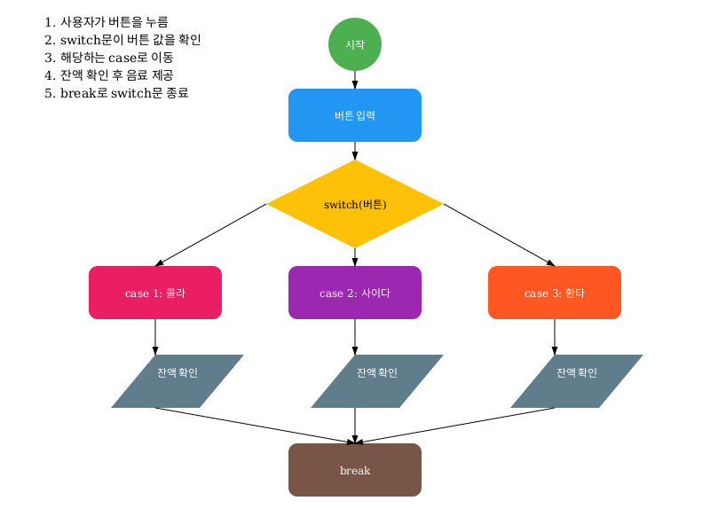
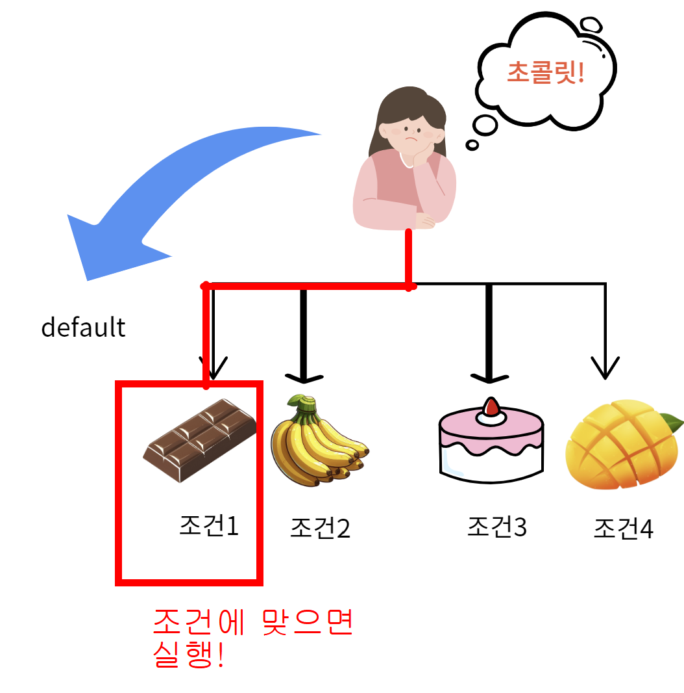
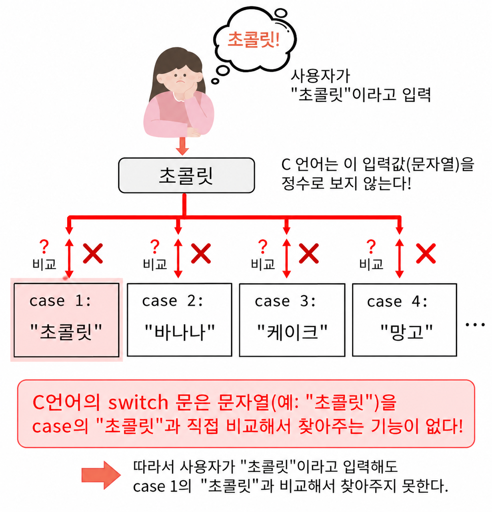
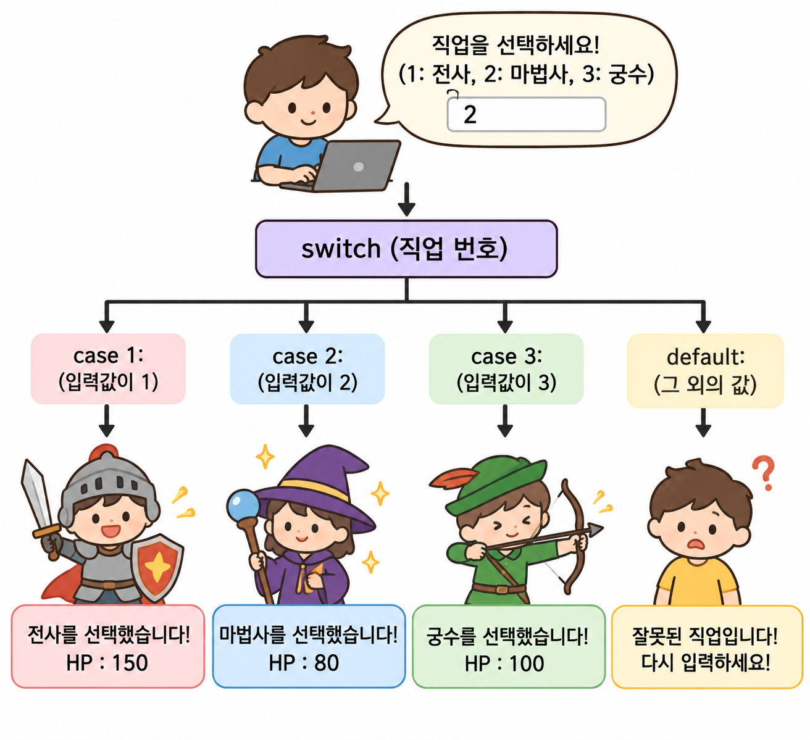

switch는 하나의 값을 여러 선택지와 비교한다
switch문은 조건 값이 여러 case 중 하나와 일치할 때, 그 case에 연결된 실행문을 선택하는 조건문이다.
조건이 두세 개 정도라면 if문으로도 충분하지만, 메뉴 번호·직업 번호·게임 상태처럼 하나의 값이 여러 선택지 중 어디에 해당하는지 판단할 때는 switch문이 구조를 훨씬 선명하게 보여준다.
기본 문법의 뼈대
switch 뒤의 조건 값은 한 번 평가되고, 각 case의 값과 차례로 비교된다. 일치하는 case가 없으면 default로 이동한다.
switch (조건 값) {
case 값1:
실행할 문장;
break;
case 값2:
실행할 문장;
break;
default:
일치하는 값이 없을 때 실행할 문장;
break;
}비교할 조건 값을 지정한다.
조건 값과 비교할 선택지를 만든다.
현재 switch문을 즉시 종료한다.
어떤 case와도 맞지 않을 때 실행한다.
case 뒤의 값은 실행 중에 변하는 변수가 아니라, 비교 기준이 되는 정수 상수여야 한다. “case마다 서로 다른 방”이 있다고 생각하면 이해하기 쉽다.자판기로 배우는 switch문
자판기에 메뉴 번호를 입력하면, switch문이 그 번호에 해당하는 음료를 찾아 실행한다. 아래 버튼을 직접 눌러 흐름을 확인해보자.
🧃 VENDING MACHINE / SWITCH LAB
입력값 하나 → case 하나1~3 중 하나를 고르면 해당 case가 실행됩니다.

case와 default의 역할
case는 “이 값일 때”를 나타내는 정확한 선택지이고, default는 예상하지 못한 입력을 처리하는 안전망이다.
정확히 일치할 때
조건 값이 2라면 case 2의 실행문으로 이동한다. case는 범위가 아니라 하나의 값을 의미한다.
어느 case도 아닐 때
1, 2, 3처럼 준비한 선택지 외의 값이 들어오면 잘못된 입력이나 기본 행동을 처리한다.

default를 두고 안내 메시지를 출력하는 편이 안전하다.break가 없으면 왜 여러 case가 실행될까?
switch문은 일치하는 case를 찾은 뒤, 자동으로 그 case만 실행하고 끝내지 않는다. break를 만날 때까지 아래쪽 실행문을 계속 이어서 실행한다. 이 동작을 fall-through라고 한다.
아래 버튼을 눌러 case 1에서 break가 없을 때의 흐름을 확인하세요.
case 1:
printf("초콜릿");
case 2:
printf("바나나");case 1을 골라도 case 2까지 이어서 실행된다.
case 1:
printf("초콜릿");
break;선택한 case의 실행이 끝나면 switch문을 종료한다.
switch로 처리할 수 있는 값과 없는 값
C언어에서 switch의 조건 값은 정수형 또는 열거형이어야 한다. char, short, int 같은 정수 계열과 enum은 사용할 수 있지만, float·double 같은 실수형과 문자열은 직접 비교할 수 없다.
✅ switch가 잘 맞는 경우
- 메뉴 번호처럼 정확한 정수 선택
- 직업·아이템·게임 상태 코드
- 문자 하나로 표현되는 명령
- enum으로 정의한 상태값
⚠️ if문이 더 자연스러운 경우
- 90점 이상처럼 범위를 비교할 때
- 여러 조건을 동시에 조합할 때
- 문자열 내용을 비교할 때
- 실수 값의 구간을 나눌 때

strcmp()와 if문을 조합하는 방식이 일반적이다. 범위 조건 역시 switch가 아니라 if문으로 표현하는 편이 읽기 쉽다.게임 직업 선택에 적용해보기
게임을 시작할 때 직업 번호를 입력받고, 직업별 HP를 정하는 상황을 switch문으로 만들 수 있다. 선택지와 결과가 일대일로 대응하기 때문에 switch가 잘 어울리는 예제다.

#include <stdio.h>
int main(void)
{
int job;
int hp = 0;
printf("직업을 선택하세요.\n");
printf("1. 전사 2. 마법사 3. 궁수\n");
printf("입력: ");
scanf("%d", &job);
switch (job)
{
case 1:
hp = 150;
printf("전사를 선택했습니다. HP: %d\n", hp);
break;
case 2:
hp = 80;
printf("마법사를 선택했습니다. HP: %d\n", hp);
break;
case 3:
hp = 100;
printf("궁수를 선택했습니다. HP: %d\n", hp);
break;
default:
printf("잘못된 입력입니다.\n");
break;
}
return 0;
}🎮 JOB SELECT / MINI DEMO
직업을 선택하면 switch 결과가 바뀝니다case 1, 2, 3 중 하나가 실행됩니다.
switch문 핵심만 다시 체크하기
🎮 스테이지 클리어 조건
switch는 하나의 조건 값을 여러 선택지와 비교한다.case는 정확히 일치하는 값에 연결된다.break가 있어야 선택한 case 뒤에서 실행을 멈춘다.default는 일치하는 case가 없을 때의 예외 처리다.- 범위·복합 조건·문자열 비교에는
if문이 더 적합하다.